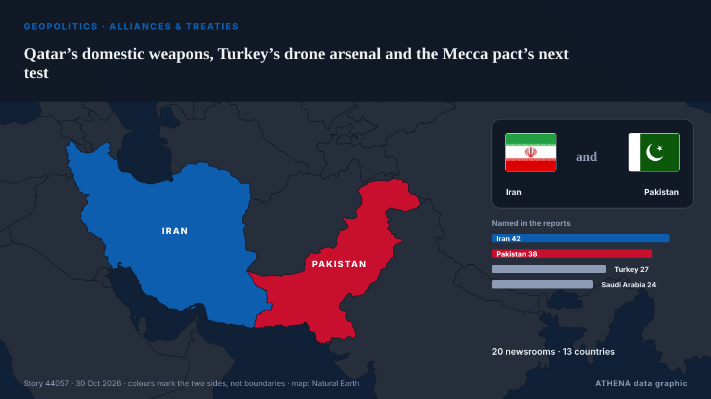

Qatar’s domestic weapons, Turkey’s drone arsenal and the Mecca pact’s next test

Opposition Republican People’s Party (CHP) leader Kemal Kılıçdaroğlu has stated his party will vote in favor of a defense agreement between Türkiye, Pakistan and Saudi Arabia when it comes before… из Hürriyet Daily News
Независимые источники: 20 изданий в 13 странах, с 21 окт.; первым сообщил Indian Express; освещение идёт на спад. ATHENA оценивает риск как умеренный (2.2/10), прежде всего из-за тяжести описываемого ущерба и географического и отраслевого охвата. Уверенность — 91 % (высокая); подтверждают независимые источники: 20 изданий, средняя надёжность источников — 77 %.
Почему это важно: События в сфере безопасности и дипломатии могут менять союзы, торговлю и рынки далеко за пределами непосредственно затронутых стран.
Что изменилось: 12 новых сообщений от 7 редакций за 24 часа до 30 окт..
Первый заголовок: Pakistan completes Mecca defense pact ratification
Заголовки приводятся на английском языке, как они были опубликованы.
Коротко в цифрах
Отобрано, оценено и написано по опубликованной методологии ATHENA. Ни один редактор не вмешивается в отдельные события. Как это создаётся ›
| 21 Oct 11:58 UTC | 1 |
|---|---|
| 21 Oct 23:58 UTC | 0 |
| 22 Oct 11:58 UTC | 0 |
| 22 Oct 23:58 UTC | 0 |
| 23 Oct 11:58 UTC | 0 |
| 23 Oct 23:58 UTC | 1 |
| 24 Oct 11:58 UTC | 0 |
| 24 Oct 23:58 UTC | 1 |
| 25 Oct 11:58 UTC | 0 |
| 25 Oct 23:58 UTC | 2 |
| 26 Oct 11:58 UTC | 0 |
| 26 Oct 23:58 UTC | 2 |
| 27 Oct 11:58 UTC | 5 |
| 27 Oct 23:58 UTC | 4 |
| 28 Oct 11:58 UTC | 5 |
| 28 Oct 23:58 UTC | 5 |
| 29 Oct 11:58 UTC | 8 |
| 29 Oct 23:58 UTC | 6 |
| 30 Oct 11:58 UTC | 2 |
| 28 Oct 16:42 UTC | 1.8 |
|---|---|
| 29 Oct 14:05 UTC | 2.6 |
| 30 Oct 18:29 UTC | 2.2 |
Откуда эти цифры
Значимость
Риск
Уверенность
Освещение — кто сообщил и когда
заголовок в оригинале · открывает источник- Indian Express · Индия · IndiaMecca defence pact full text finally out: What role it gives Pakistan in a changing West Asia
- Türkiye Today · Турция · TurkeyPakistan completes Mecca defense pact ratification
- Hürriyet Daily News · Турция · TurkeyCHP to vote in favor of Mecca defense pact
- Türkiye Today · Турция · TurkeyRiyadh airport burns, and Mecca pact faces its first real test
- AzerNews · Азербайджан · AzerbaijanCould Türkiye be drawn into wars it did not choose? - questions facing Mecca Pact
- Türkiye Today · Турция · TurkeyThe guest pass: Why Cairo is skipping the Mecca pact, for now
- Hürriyet Daily News · Турция · TurkeyTurkish parliamentary panel approves Mecca Pact
- Hürriyet Daily News · Турция · TurkeyMecca pact aims to deepen security ties: Güler
- Arab News · Саудовская Аравия · Saudi ArabiaInvestor confidence is Kingdom’s strongest defense
- Al-Monitor · Соединенные Штаты · United StatesHow wartime urgency pushed Iran to court Saudi Arabia, Turkey, Pakistan
- Arab Times · Кувейт · KuwaitIran can no longer be trusted
- Free Malaysia Today · Малайзия · MalaysiaLeadership question looms over proposed Warisan-STAR-KDM pact?
- Dawn · Пакистан · PakistanRegional security
- Dawn · Пакистан · PakistanThe Tehran opening
- China Daily — page reader · Китай · ChinaDefense pact trio pushes for Mideast peace
- Anadolu Agency (English) · Турция · TurkeyTurkish defense minister, chief of general staff attend Türkiye-Bulgaria-Romania meeting in Sofia
- The Diplomat · Япония · JapanWill Pakistan Fight in Saudi Arabia’s Wars?
- Anadolu Agency (English) · Турция · TurkeyTürkiye, Kazakhstan to deepen defense industry cooperation
- NDTV · Индия · IndiaIndia Closely Monitoring Tehran Talks Involving Pakistan, Says Centre
- Anadolu Agency (English) · Турция · TurkeyTurkish, US presidents discuss bilateral ties, regional developments
- Business Recorder · Пакистан · Pakistan‘UBG violates’ its pact: BMP says will contest FPCCI polls
- Dawn · Пакистан · PakistanA huddle in Tehran
- Hürriyet Daily News · Турция · TurkeyParliament to form panel to monitor PKK disarmament
- Türkiye Today · Турция · TurkeyTürkiye reportedly eyes new military bases in Africa and Asia
- Free Malaysia Today · Малайзия · MalaysiaCSA not linked to Melaka polls pact with PH, says Bersatu
- Daily Tribune · Филиппины · PhilippinesASEAN defense talks yield new initiatives, security agreements
- Express Tribune · Пакистан · PakistanPakistan, Turkiye have matured historic friendship into 'multifaceted strategic partnership': PM Shehbaz
- Business Recorder · Пакистан · Pakistan‘No defence pact discussed in Tehran,’ Khawaja Asif responds to Fazl
- Arab News · Саудовская Аравия · Saudi ArabiaMakkah pact’s first mediation effort to pause the Iran war
- EUobserver · Бельгия · BelgiumCan EU-China AI talks survive Huawei bans and new export controls?
- Dawn · Пакистан · PakistanPakistan, Turkiye shall 'continue to champion dialogue, diplomacy' alongside bolstering defences: PM Shehbaz
- Türkiye Today · Турция · TurkeyBarrack says Egypt is outside Mecca pact because of its treaties with Israel, Greece
- Türkiye Today · Турция · TurkeyBangladesh eyes Mecca defense pact membership
- Türkiye Today · Турция · TurkeyChina is watching Mecca agreement very closely—and staying very quiet
- Al Jazeera English · Катар · QatarHouthi forces claim six attacks on Saudi airports, oil facilities
- Business Recorder · Пакистан · PakistanNo defence pact under discussion at Tehran meeting, Asif tells NA
- Business Recorder · Пакистан · PakistanMakkah Pact: BD’s inclusion could expand regional reach, trade ties: Dy HC
- NDTV · Индия · IndiaSaudi "Destroys Houthi Drone" In Mecca, Group Call It "Fabrication"
- Türkiye Today · Турция · TurkeyEgypt and the Mecca alliance: A natural partner that isn’t ready
- Al Jazeera English · Катар · QatarSaudi Arabia reports interception of Houthi drone targeting Mecca